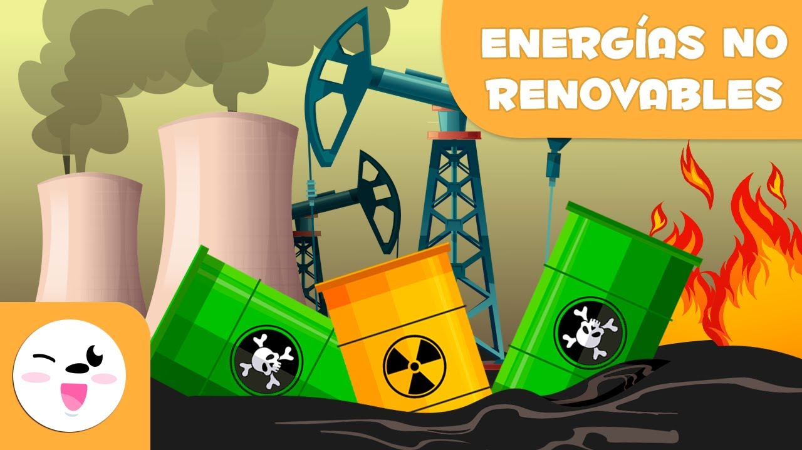

Luciana Jaramillo Del Castillo
Sofia Montoya Gonzalez
12 de Abril 2023
| Que es la Energía
Cuando hablamos de la energía nos referimos a distintos conceptos pero el principal de ellos es todo aquel que tenga movimiento, una transmisión de ondas y una variación de temperaturas ETC. Por ejemplo existe la energía eólica, la energía solar y la energía eléctrica.

Tipos de energías
• Energía eléctrica
• Energía térmica
• Energía electromagnética
• Energía química
• La energía nuclear
• Energía Trabajo
• Energía de transmisión Onda

Energía no renovable
Son aquellas que se encuentran en la naturaleza las cuales son de cantidades agotables para el planeta y no se regeneran de una forma completamente natural; el carbón, petróleo, gas natural y la energía nuclear son ejemplos de fuentes claramente que no son renovables.
Tipos de energías no renovables
Existen dos tipos de energías no renovables, las convencionales y las no convencionales
Convencionales
Son fuentes de energía frecuente que se distribuyen y se extraen en todo el mundo y producen mucha cantidad de energía siendo los principales protagonistas del impulso industrial.No convencionales
Son energías que se encuentran en cantidades limitadas las cuales una vez consumidas en su totalidad no pueden sustituirse y lo cual se acaban tan rápido deben de tener la suficiente frecuencia pero esto si lo hacemos muy seguido causamos los efectos invernaderos
Energía renovable
Son fuentes de energía naturales que no se agotan nunca como el sol, viento, agua estas nunca le harían daño al planeta. Tipos de energías renovables Energía solar, energía eólica, energía hidroeléctrica, biomasa y biocarburantes, energía geotérmica y la generada merced a las olas, mareas y corrientes marinas.
.jpg)